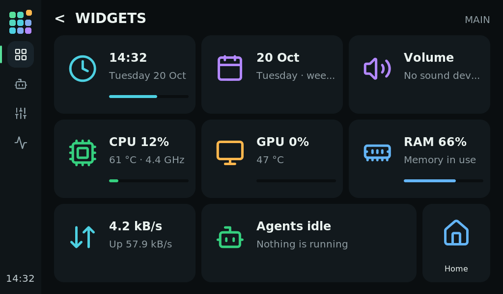
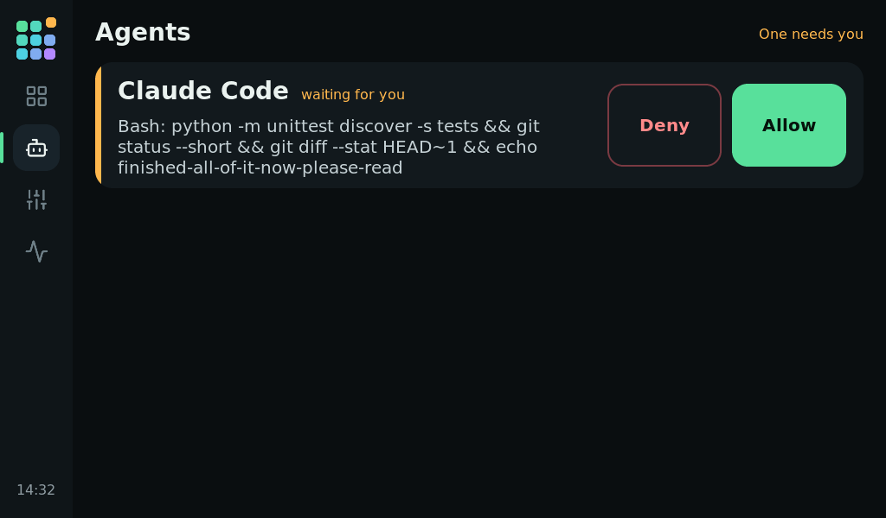
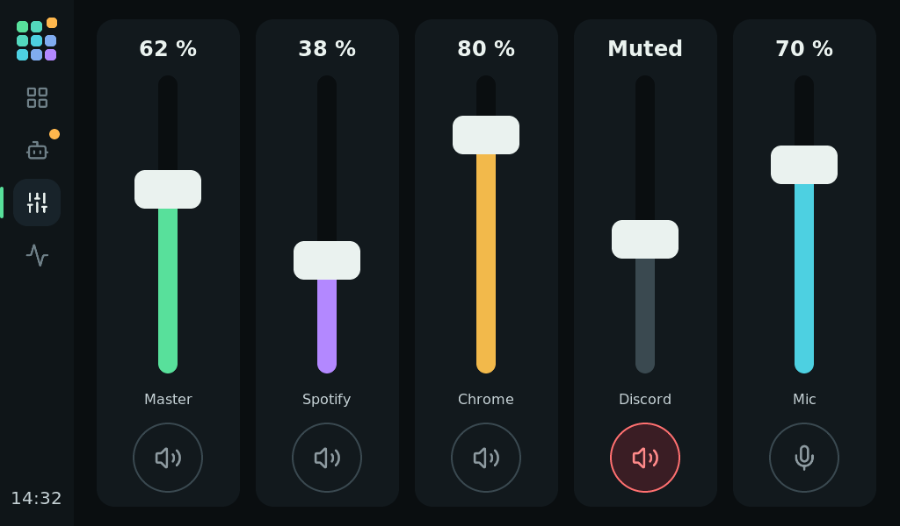
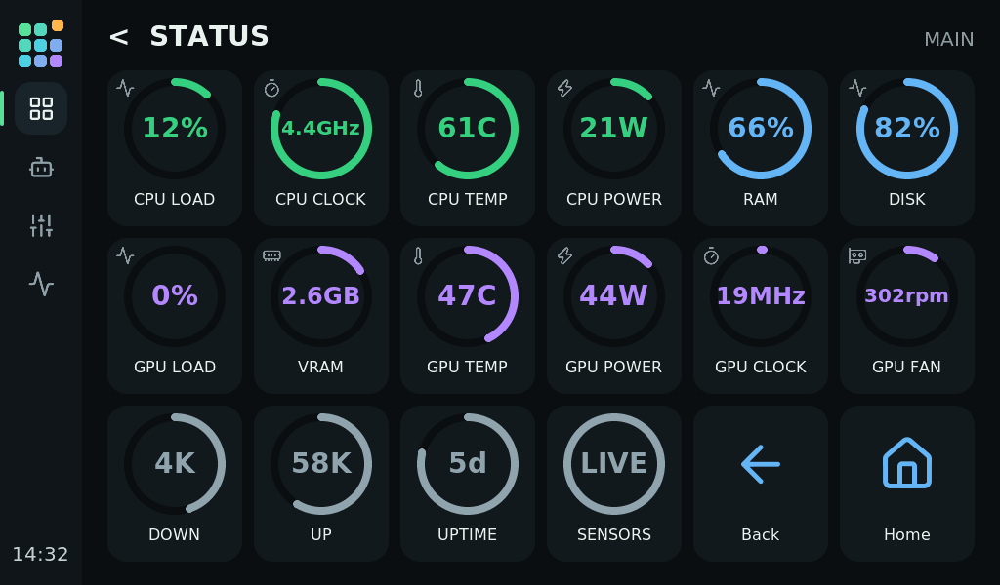
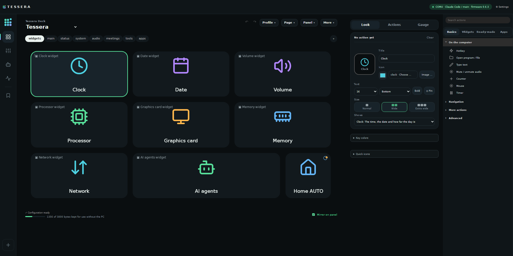
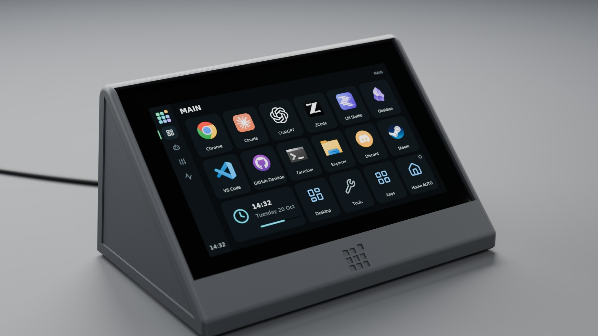

One 7-inch touchscreen, a deck you build yourself.
Tessera turns a 7-inch ESP32-P4 touchscreen, such as the GUITION JC1060P470C, into a macro deck: 18 touch keys for apps, hotkeys and macros, plus widgets, live PC gauges, a sound mixer and a screen that answers your AI agent. It works without soldering, an account or the cloud.
Your apps, hotkeys and macros on a 7-inch touchscreen.
The panel shows a 6 × 3 grid of keys on a 1024 × 600 touchscreen. A key can cover two or three slots and show a widget. It talks to a small Windows host over one USB cable and keeps the last layout for when the PC is off.

A Blender render of the printed console with the panel's real screen. The board price is the AliExpress street price in November 2026, and it changes.
The panel's screens, drawn by its own firmware.
The stills come from the panel's own LVGL interface in a native build at 1024 × 600. The agents and mixer screens show sample data.




Three steps, no toolchain.
Unpack and start
Unpack the host zip from the latest release and double-click Tessera.cmd. The first start installs Python if it is missing, puts a shortcut on the Desktop and opens the editor.
Flash the panel
Connect the board with USB. In the editor, Panel → Panel firmware and updates installs the firmware that comes in the zip. A new board needs Full install once.
Add a key, press it
Click an action in the list and it becomes a key. Press it on the panel and the editor says "It works".
Drag keys into place and the editor saves as you go.
Set up keys, pages and profiles in a drag-and-drop editor on your PC. Start from ready-made actions and profile templates for Windows, VS Code, browsers, meetings, media, Codex, Claude Code and ZCode, and give each key a real app icon or one of the bundled icons.
Profiles can follow the program in front, with a lock key to stay put. A Getting started checklist ticks itself off as you go.

A stand you print without supports.

A closed console reclines the panel 45° and hides the cables. A lighter open dock holds it at 30° by its own weight. Both print in PLA or PETG: the console needs no supports, and the dock should need none. In the console the panel stays in by its own weight or with four small screws.
STL and STEP files, the FreeCAD and Blender models and the renders are in the repository. The maker does not state the thread in the panel's corner posts: try an M2 screw first.
Built for the desk, open source under the MIT licence.
It answers your AI agent
When Claude Code asks for permission, the question shows on the panel. Touch Allow or Deny. The agents screen shows what Claude Code, Codex and ZCode are doing, since when and in which project.
Stays on your PC
Tessera needs no account, cloud or subscription. The panel has no network and speaks only to the host over USB. The editor and the control API listen on 127.0.0.1 only.
Pages follow the app in front
Profiles switch with the program you use, and a lock key keeps the one you are on. Wide keys show the clock, CPU, GPU, memory, network, volume, the music that plays, your next meeting or a timer.
Macros with more than a tap
Multi-step actions, long press, double press, hold to confirm, toggle keys, counters and timers. Microphone, speaker and media keys show the real Windows state.
Live gauges
CPU, GPU, VRAM, RAM, disk, network, temperatures, power, fan speed and FPS, in the gauge's colour with amber and red at the thresholds.
Scripts and plugins
Drive keys from your own scripts with the local API or deckctl, hook in Claude Code, or write a plugin. Plugins for Home Assistant through the PC and for OBS Studio are included.
The 7-inch boards it runs on.
GUITION JC1060P470C
The main board, about $35 to $42 on AliExpress. Tested on hardware, and every release has its firmware.
Elecrow CrowPanel Advance 7.0
Boots on a contributor's board; touch and colours are not checked yet. The release has its firmware; CROWPANEL.md has the details.
Waveshare ESP32-S3-Touch-LCD-7
Experimental. The release has its firmware, and one tester has the display, touch, keys and PC actions working. S3.md lists what is untested.
Sunton ESP32-8048S070
Experimental. The release has its firmware, but it has not run on the board yet.
Download a release, or build it yourself.
The release has a host zip with the host, the editor and the panel firmware, and a firmware zip for each board, with SHA-256 checksums and a build attestation for the zips. Tessera is not code-signed, so Windows SmartScreen may warn: compare the hash first.
# from the latest release tessera-host-v1.2.0.zip # unpack, then double-click Tessera.cmd
# in an ESP-IDF 6.1 shell # stop the host first: it owns the port git clone https://github.com/catorendal-a11y/tessera-deck cd tessera-deck idf.py -B build/idf6 build idf.py -B build/idf6 -p COMx flash
Before you build one.
What do I need?
The GUITION 7-inch ESP32-P4 display dev board, model JC1060P470C (1024 × 600, about $35 to $42 on AliExpress), or one of the other boards, a USB cable and a Windows 10 or 11 PC. The cable goes to the USB Serial/JTAG port, or to the UART port on the CrowPanel and the Sunton board. The host needs Python 3.11 or newer; the first start installs it with winget if it is missing. You need no Wi-Fi and no soldering.
Does it run on another board, or on macOS or Linux?
The Elecrow CrowPanel Advance 7.0, another ESP32-P4 board with a 1024 × 600 screen, has its own build. It boots on a real board, but colours and touch have not been checked. Its firmware is in the release, and docs/CROWPANEL.md has the details. There is also an experimental build for two ESP32-S3 boards with an 800 × 480 screen, the Waveshare ESP32-S3-Touch-LCD-7 and the Sunton ESP32-8048S070. One tester runs it on the Waveshare board, the Sunton build has not run on a board yet, and docs/S3.md lists what is untested. Other boards need a port, and the host runs on Windows only. CONTRIBUTING.md says what a port takes; open an issue with the board's name and resolution.
How does it compare with a Stream Deck?
A Stream Deck MK.2 lists at $149.99 with 15 physical keys, the XL at $249.99 with 32. Tessera costs the board and gives 18 keys per page, keys up to three slots wide, and widgets, a mixer, PC status and the AI agents built in, under the MIT licence. You do give up the feel of real keys, since Tessera is a glass touchscreen. Prices are US list prices from November 2026.
Does it send anything to the internet?
Only what you ask for: the update check on GitHub, the clock's weather from Open-Meteo, online icons from Iconify, your own HTTP actions and calendar, and the plugins you turn on. The bundled plugins only reach your own Home Assistant and OBS. Setup also downloads Python packages from PyPI, pinned by hash, and Libre Hardware Monitor if you turn on the optional sensors. SECURITY.md lists every connection.
What happens when the PC is off?
The panel keeps the last layout and shows it while the PC is off. Actions run on the PC, so keys need the host. A watchdog restarts the panel when the screen or USB loop hangs, and the bootloader rolls back an update that crashes or hangs before it confirms itself. All three were tried on a panel; VERIFICATION.md in the repository has the results.
Does it work with Home Assistant?
Through the PC, yes: the bundled plugin runs Home Assistant actions from keys. On the esphome-beta branch the panel can also join your Wi-Fi and show up through the ESPHome integration, with keys that work while the PC is off. That beta is not in the release yet.
Licence and contributing?
MIT. ESP-IDF, LVGL, cJSON, the Lucide icons (ISC), the DejaVu fonts and the optional Libre Hardware Monitor (MPL-2.0) keep their own licences. Bug reports, ideas, ports and pull requests are welcome.
Home Assistant over Wi-Fi is a beta. It lives on the esphome-beta branch and is not in v1.2.0. It runs on one panel and works with aioesphomeapi, the library Home Assistant uses for ESPHome devices, but it has not been tried in a full Home Assistant install yet. Reports in issues are welcome.